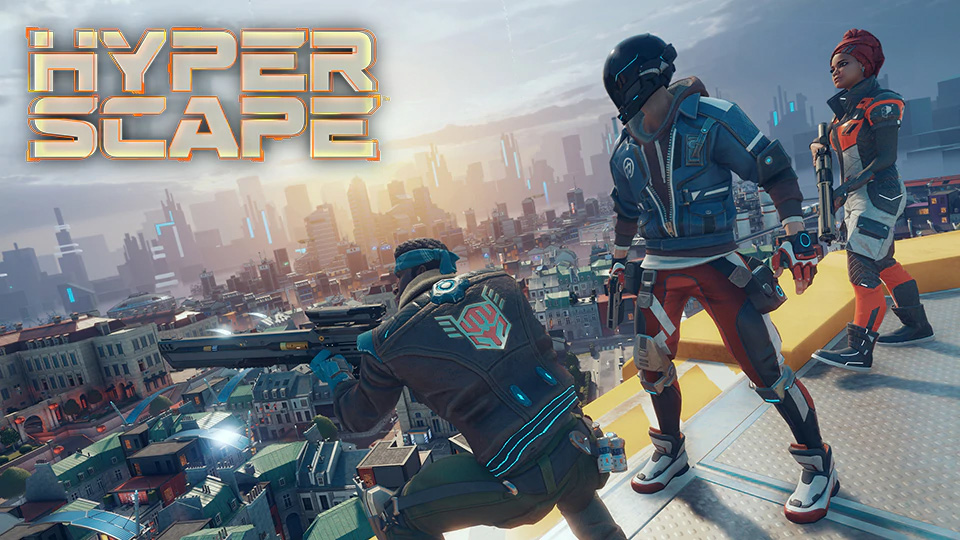

Fique por dentro das ultimas notícias do mundo dos games!
A Ubisoft revelou nesta quinta-feira o lançamento de Hyper Scape, seu novo battle royale gratuito. A criação do jogo teve participação de desenvolvedores do Rainbow Six: Siege, FPS de sucesso da produtora. Ainda em fase de testes, o título foi liberado para ser transmitido por algumas personalidades do Twitch e YouTube, alcançando meio milhão de espectadores em menos de trinta minutos. Além disso, chaves para o teste estão sendo dropadas durante transmissões na Twitch.
Baseado no cenário futurístico de New Arcadia, Hyper Space tem lançamento de seu beta aberto previsto para 12 de julho nos PCs. Porte para PlayStation 4 e Xbox One ainda não tem data especificada. A temporada de estes ainda não está disponível nos servidores brasileiros, porém a Ubisoft, através das redes sociais, disse que o game chegará até o país "em breve".
- Sabemos do hype de vocês pelo nosso recém anunciado Hyper Scape! Você talvez já deva ter visto as streams em alguns países e se perguntado: mas e o Brasil? Fique tranquilo! MUITO em breve teremos novidades pra que todos vocês possam jogar! FIQUEM LIGADOS! - disse o comunicado.
Construído do zero como um espetáculo interativo de streaming, o Hyper Scape promete mudar a maneira como assistimos aos videogames, permitindo que streamers e criadores de conteúdo interajam com o público como nunca antes. A empresa diz que cada batalha e toda vitória serão únicas graças à participação de fãs ao redor do mundo.
Até agora há dois modos disponíveis na etapa de testes: Crown Rush Squad e Dark Haze Solo. No primeiro, times de três membros batalham pelo domínio da Coroa que fica no centro do mapa ou pela eliminação de todos os adversários. Já o modo solo é no melhor estilo cada um por si. A produtora promete mais dois modos até o lançamento do beta.
O battle royale também mostra uma nova abordagem com os players eliminados. Após ser abatido, é possível vagar pelo mapa em uma forma que não permite combates, mas oferece a possibilidade de alimentar seu time com informações até que um ponto de respawn seja disponibilizado.
De acordo com o site oficial, os Contenders (personagens do game) poderão usar HACKS, um conjunto de habilidades saqueáveis que criam opções poderosas para diferentes estilos de jogo. Desde o estabelecimento de MINES que procuram seus inimigos, até o uso de INVISIBILIDADE para uma abordagem furtiva, ou mesmo para se impulsionar no ar antes de bater no seu oponente com o SLAM. O Hacks não apenas mudam a forma como você joga, mas também oferecem a vantagens necessárias para vencer a competição.
Durante todo o tempo, a figura do AI Game Master jogará cartas de eventos globais durante a partida, afetando a gameplay com muitos bônus. Enquanto isso, o próprio mapa, NEO-ARCADIA, sucumbirá ao DECAY ao excluir distritos inteiros.